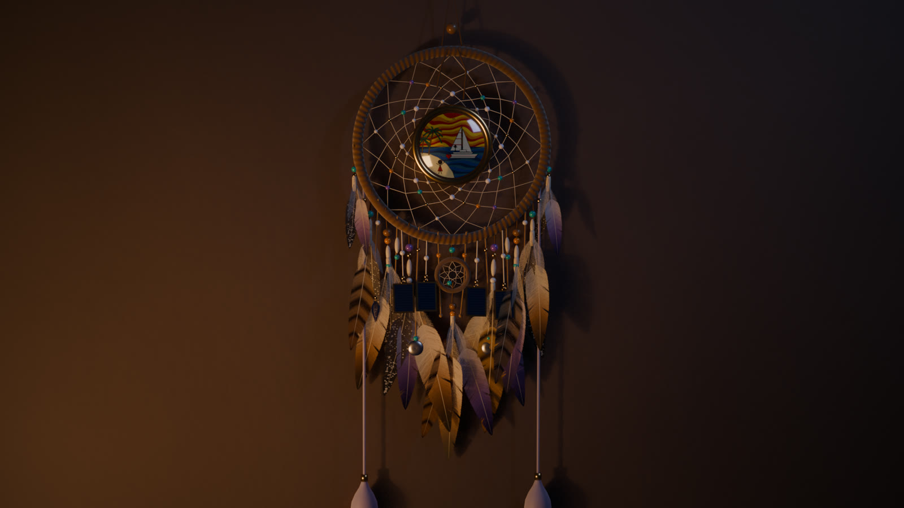
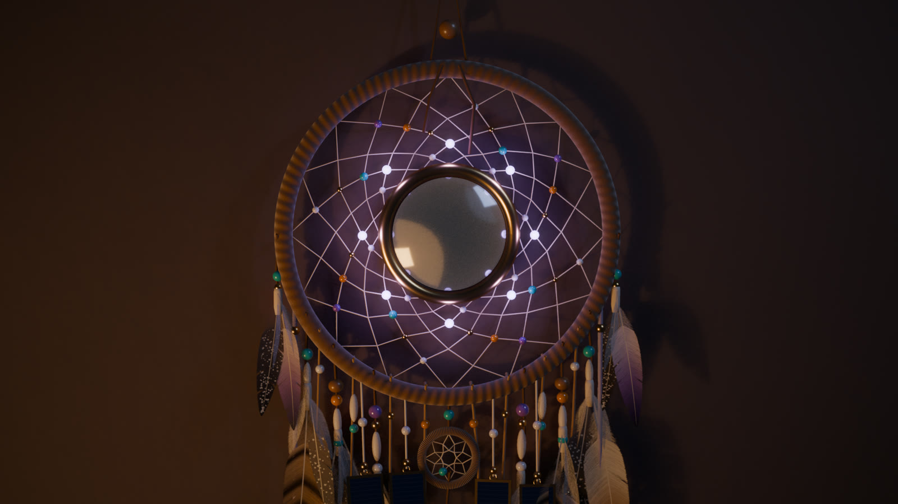
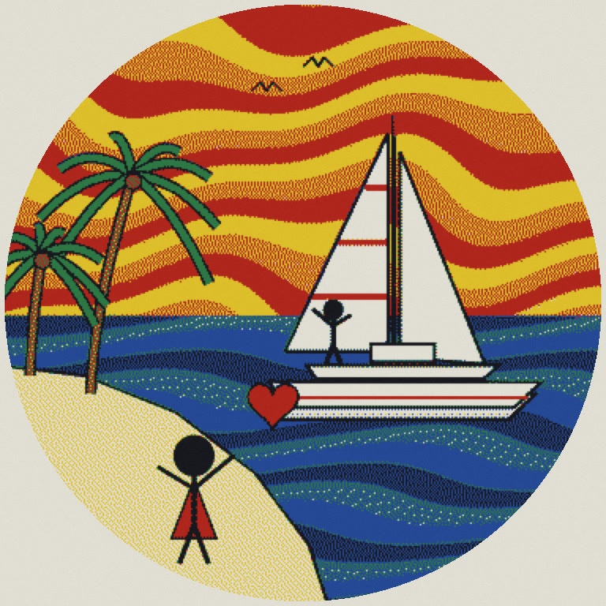
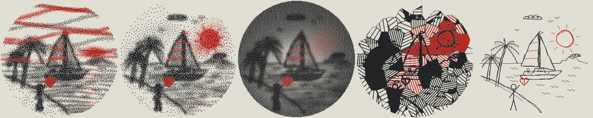
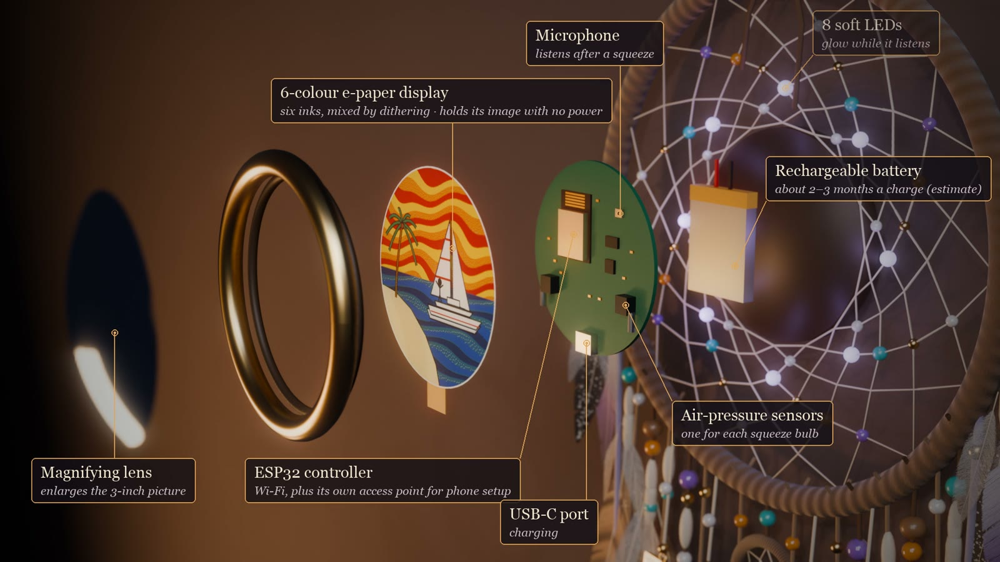

Dreamkeeper
Helping you remember your dreams.

What it is
A hand-finished dreamcatcher that hangs by the bed. When you wake with a dream still in your head, you squeeze one of the soft bulbs hanging below the feathers and say what you remember. A ring of small lights in the web glows while it listens. A few moments later the paper-like screen at the centre draws a picture of the dream, and keeps it there all day without using power.
- SqueezeEither bulb. Air pressure in the tube wakes the device; there is no visible switch.
- Tell itEight LEDs glow gently while the microphone listens, then pulse off.
- It drawsThe dream appears in six colours on a 3-inch e-paper screen under a magnifying lens, in the style you chose.
- It remembersHave the same dream again and it recognises it, then adds detail to the earlier picture.


The two films
Drawing styles
You pick a drawing style when you set the Dreamkeeper up from your phone, and can change it whenever you like. Whatever the style, the dream has to stay easy to read: the same boat, island, figures and heart are plain in every one. Here is the example dream in fifteen styles, each limited to the six inks of the screen.

These are illustrations made for this concept to show the idea on a six-colour screen. They are not output from a working device, and the list of styles is open-ended.
Product specification
| Element | Specification | Status |
|---|---|---|
| Size | 9 in (229 mm) hoop. With feathers and bulbs the piece hangs about 21 in (53 cm) long. | Decided |
| Display | 3 in round screen at the centre of the web, under a magnifying lens. Colour e-paper for low power: six inks (black, white, red, yellow, blue, green). | Decided |
| Controls | Two squeeze switches, the lowest hanging elements. A squeeze starts a recording. | Decided |
| Lights | Several LEDs in the web glow gently while listening, then pulse gently off. Eight in the model. | Decided |
| Controller | ESP32 with Wi-Fi. Has its own access point so it can be set up from a phone. | Decided |
| Power | Battery pack, charged by USB-C and by small solar panels hung as charms. | Decided |
| Dream memory | Remembers past dreams. A repeated dream is recognised and its earlier picture gains detail. | Decided |
| Styles | Many drawing styles, chosen on the phone during setup. Fifteen are shown here, including The Scream, Rembrandt, Picasso and Van Gogh. | Decided |
| Moving pictures | Low-refresh animation: a new frame every few seconds, as e-paper allows. | Decided |
| Hoop and web | Bent-wood hoop wrapped in suede lace, tied off at the top with a hanging loop. Waxed-thread web of seven rounds, slightly irregular as hand weaving is. | Proposal |
| Ornament | Seven feathered laces with down plumes at the bindings, eight plain suede fringe laces, a small second hoop at the bottom centre, side clusters at 3 and 9 o'clock. Beads in turquoise, amber, amethyst, pearl, brass, wood and bone hairpipe; two conchos, crystal drops. | Proposal |
| Hub | Dark wood housing 86 mm across and 13 mm deep behind a brass bezel, holding the screen, board and battery. | Proposal |
| Charge life | About 2–3 months between charges at one dream a day. See the power budget below. | Estimate |
Technical breakdown

| Part | What it does | Suggested part |
|---|---|---|
| Lens | Enlarges the picture and makes the screen read as a glass cabochon. | Plano-convex acrylic, about 80 mm |
| E-paper display | Shows the picture. Draws power only while it changes, and holds the image with none. | Six-colour panel (E Ink Spectra 6), 3 in visible |
| ESP32 | Runs everything. Joins home Wi-Fi to send the recording and fetch the picture. On first use it broadcasts its own network; you join it from your phone and a setup page opens. | ESP32-S3 module |
| Microphone | Records your description after a squeeze, for a set time or until you squeeze again. | Digital MEMS microphone |
| Squeeze sensors | Each bulb's tube ends at an air-pressure sensor on the board. A squeeze raises the pressure and wakes the controller. No wiring runs down to the bulbs. | Two small pressure sensors |
| Web LEDs | Glow while listening, pulse off when done. | Eight small RGB LEDs on fine wire |
| Battery | Powers the device between charges. | Lithium-polymer cell, about 800 mAh |
| USB-C | Main charging route, on the lower edge of the hub. | USB-C socket with charge controller |
| Solar charms | Four small panels among the feathers trickle-charge the battery. | Four cells of about 20 × 30 mm |
| Dream service | Turns speech into text, compares it with your earlier dreams, and draws the picture in the chosen style. This runs online, not on the device. | Speech-to-text, a text-similarity check, an image model |
How many colours can e-paper show?
| Technology | Colours | Fit for this |
|---|---|---|
| Black, white and red | 3 | Cheapest and widely sold in small sizes, but limited. |
| E Ink Spectra 6 | 6 inks, more by dithering | The choice here. Sold as small hobby modules that an ESP32 can drive. Slow to refresh. |
| E Ink Kaleido 3 | 4,096 | Fast, but made for e-readers of 6 inches and up, and colours look washed out. |
| E Ink Gallery 3 | About 50,000 | The widest range, but built for e-readers and signs, not small hobby panels. |
Figures are from press coverage of E Ink's announcements, not from datasheets, and should be checked before choosing a panel.
Power budget
Assumes an 800 mAh cell with about 700 mAh usable, and one dream recorded a day. Every figure here is calculated from typical part behaviour and has not been measured on hardware.
| Use | Assumption | mAh per day |
|---|---|---|
| Asleep, watching for a squeeze | About 150 µA around the clock | 3.6 |
| Recording a dream | 30 s listening, 20 s on Wi-Fi, one full screen refresh, LEDs on | 1.6 |
| Slow animation | About 24 frames after each dream | 0.3 |
| Battery self-discharge | About 3% a month | 0.8 |
| Total | 700 mAh ÷ 6.3 mAh ≈ 110 days; allowing margin, 2–3 months | 6.3 |
Solar. With e-paper the daily need is small enough for the charms to matter. In ordinary room light they would return roughly 0.3–0.6 mAh a day, under a tenth of the need. In a bright window they could cover all of it.
Limits to design around
- Colour e-paper is slow. A full colour refresh typically takes many seconds and flashes. The gradual sharpening shown in the film is an idealised version.
- Animation will be very slow. Each new frame is a full colour refresh, so movement means a new frame a few times a minute at best, and each frame costs battery.
- A round 3-inch six-colour panel may not exist off the shelf. None has been confirmed yet. Rectangular Spectra 6 modules of 3.6 and 4 inches are sold for hobby boards; one behind a round mask would do for a prototype.
- The picture is made online. The ESP32 cannot transcribe speech or draw. That means Wi-Fi, a running cost per dream, and spoken dreams leaving the house. Buyers will ask about privacy; the answer needs deciding.
- Recognising a repeated dream is a judgement call. The service needs a threshold for "the same dream", and a way for the owner to say it got it wrong.
Visual identity: Night Heirloom
A handmade, slightly mystical object for adults. The technology stays out of sight; the copy talks about ritual and remembering.
- Lettering. Name and headlines in an italic old-style serif (Cormorant Garamond here). Body text in a plain sans. Small capitals with wide spacing for labels.
- Photography. Dim room, one warm lamp low and to the left, cool moonlight from the upper right. The piece hangs on a plain dark wall. No phones, cables or circuit boards in lifestyle pictures; the exploded view is for the technical page only.
- The picture. Six flat inks on paper white, bold enough to read from the pillow, with red kept for what matters most in the dream.
- Voice. Quiet, second person, short sentences. Say what it does. Avoid promising meaning, healing or protection.
Copy
Dreamkeeper hangs by your bed and helps you keep the dreams you would otherwise lose by breakfast. Squeeze, say what you remember, and it draws the dream on a small paper-like screen at the centre of its web, in a style you choose.
Most dreams are gone within minutes of waking. Dreamkeeper gives you somewhere to put them. Reach for one of the soft bulbs below the feathers and squeeze. A ring of lights in the web glows to show it is listening. Tell it what you remember, in whatever order it comes.
A little later the screen at the centre draws your dream in colour, as a soft picture that sharpens as you watch. The picture stays there through the day without glowing and without using power. If the same dream returns, it recognises it and adds to the picture you already have.
Each piece is finished by hand with a suede-wrapped hoop, woven web, feathers, glass and stone beads. It charges by USB-C, and its small solar charms help in a bright room.
- Tell it before you forget.
- Squeeze. Speak. See your dream.
- Last night, drawn by morning.
- The dream you keep having, one detail clearer each time.
- A dream journal you never have to write.
- Squeeze a bulb and describe your dream; it draws it on a 3-inch e-paper screen
- Choose from many drawing styles on your phone, from Rembrandt to pop art
- Remembers your dreams and builds on the picture when one returns
- No glow at night: the screen is paper-like and the web lights switch themselves off
- About 2–3 months per charge (estimate); USB-C, with solar charms to top up
- Set up from your phone over Wi-Fi; no app store download needed
- 9-inch hoop, about 21 inches long with feathers; hand-finished
- Opening. The hero picture, the name, "Helping you remember your dreams."
- The ritual. Squeeze, tell, see, remember, with the 60-second film.
- The object. Materials and making, close-up photographs.
- Under the web. The technical film and the parts table.
- Questions. Privacy, charging, Wi-Fi, what happens to recordings.
- Collaborate. Concept stage, by Kareem, contact address.
Help build it
The Dreamkeeper is an idea with a 3D model and a plan, not yet a working object. Kareem is looking for people who would like to help make the first one. Useful skills include:
- Electronics. A small ESP32 board with e-paper, microphone, pressure sensors, battery and solar charging.
- Firmware. Low-power sleep, Wi-Fi setup from a phone, driving a six-colour e-paper panel.
- AI and software. Turning a spoken dream into a picture in a chosen style, and recognising a dream that returns.
- Craft. Hoop, web, beadwork and feathers, and hiding the electronics well.
- Product design and optics. The hub, the lens, the squeeze bulbs.
Notes
- Origins. The dreamcatcher comes from the Ojibwe people. This concept is inspired by that tradition. It is not Native-made and does not claim to be.
- Style names. "Rembrandt" and "Picasso" describe the look. Picasso's name is a protected trade mark of his estate, so a product on sale would need a licence or a different label such as "Cubist".
- Claims. "Remembers", "recognises" and the charge life all describe intended behaviour. Nothing here has been prototyped.
The pictures and films are computer renders of a 3D model, not photographs of a built object. The construction details follow how hand-made dreamcatchers are put together: a bent-wood hoop wrapped in lace, a web tied to the hoop and spiralling to an open centre, beads strung into the web, and feathers tied to laces at the bottom.